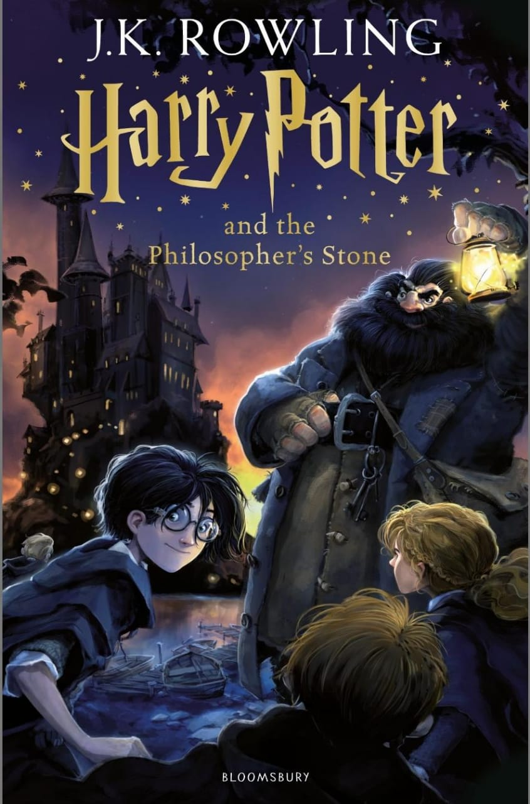

📚 Book Review: Harry Potter and the Sorcerer's Stone

📘 Overview of the Story
Author: J.K. Rowling
Genre: Fantasy, Young Adult
Published: 1997
Harry Potter and the Philosopher's Stone introduces:
Harry, a neglected boy who discovers on his 11th birthday that he’s a wizard.
Hogwarts School of Witchcraft and Wizardry—a richly imagined magical world.
Core characters: Ron, Hermione, Dumbledore, Hagrid, and Voldemort (in weakened form).
A simple but compelling mystery: what is the Philosopher's Stone and who is after it?
🎯 Key Themes
Belonging & Identity: Harry moves from being unloved and invisible to someone valued and seen. A major coming-of-age theme.
Good vs Evil: The simplicity of Voldemort as evil is intentional here; later books expand on this morally.
Friendship & Loyalty: The trio’s early bond emphasizes teamwork and courage.
Choice & Character: Dumbledore’s famous quote—“It is our choices, Harry, that show what we truly are…”—sets up a major series theme.
🧠 Literary Qualities & Style
Writing Style: Accessible and witty, suitable for children aged 8–12, but layered with enough depth to appeal to adults.
World-Building: Rowling’s greatest strength. Hogwarts, Diagon Alley, the wizarding shops, magical creatures—all feel immersive and logically built.
Structure: A classic boarding school narrative mixed with fantasy quest; each chapter introduces new magical concepts while advancing a broader mystery.
📰 Critical Reception
The Guardian praised it as "a richly textured first novel" and "a triumph of imagination" (theguardian.com).
Publishers Weekly called it “a charming, imaginative, magical debut,” highlighting its blend of British humor and adventure.
Kirkus Reviews noted its “clever plot” and “delightfully imaginative” tone, but initially expected it to appeal mostly to children.
By 1999, critics began seeing it as not just a children's phenomenon, but a literary game-changer in fantasy fiction.
👪 Common Sense Media
Rated 8+ for readers, they noted:
Strong messages of courage, loyalty, and curiosity.
Humor and warmth despite occasional dark moments.
A good starting point for discussions about resilience, bullying, and found family.
📎 Common Sense Media Review – Philosopher's Stone
🗣️ Reader & Fan Opinions
Highly beloved across all age groups, often cited as a “gateway book” for non-readers.
“One of the most important books of my childhood.”
“It's charming, whimsical, and introduces a world I never wanted to leave.”
Some fans note that it’s more whimsical and less intense than later books—“it feels like an introduction” or “a light start before the real drama kicks in.”
🎥 Movie vs. Book
The film adaptation (2001) was faithful and tonally consistent, though many fans note it glossed over some of the character depth and Hogwarts' richness found in the novel.
The movie has a strong nostalgic fanbase, but many readers prefer the book’s detail and internal monologue (especially Harry's emotional insights).
✅ Final Thoughts
Harry Potter and the Philosopher’s Stone remains an iconic first novel—not just for the series, but for modern children’s literature. While it’s less emotionally complex than later books, its sense of wonder, clever humor, and universal appeal made it a gateway into reading for millions. It set the tone for a series that would grow with its readers and become one of the most beloved literary journeys of all time.
🧙♂️ Plot Summary:
Harry learns he is famous in the wizarding world for surviving an attack by the dark wizard Voldemort as a baby. At Hogwarts, he befriends Ron Weasley and Hermione Granger, encounters magical creatures, learns to play Quidditch, and begins to uncover a mystery involving a magical artifact—the Sorcerer’s Stone. The book builds to a thrilling climax as the trio uncovers who is trying to steal the Stone and why.
✅ What Works Well:
World-Building: Rowling crafts an immersive magical world filled with wonder and imagination.
Characters: Memorable, well-developed characters like Hagrid, Dumbledore, and Snape add richness to the story.
Themes: Friendship, courage, self-discovery, and good vs. evil are explored with clarity and warmth.
Pacing: The narrative flows smoothly, balancing school life, magical discoveries, and growing suspense.
❌ Potential Criticisms:
Simple Prose: Some readers may find the writing style more suited for younger audiences.
Predictability: For adult readers, certain plot points may feel familiar or formulaic.
⭐ Rating:
4.5/5 – A magical and timeless introduction to a beloved series. It sets the stage for deeper themes and darker adventures in the books to come.